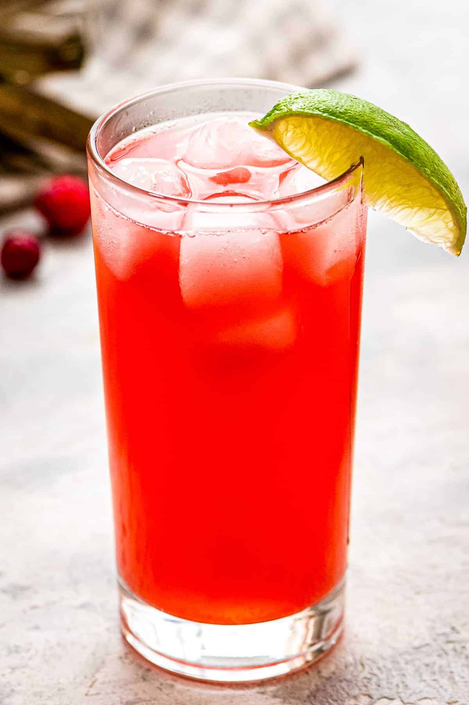
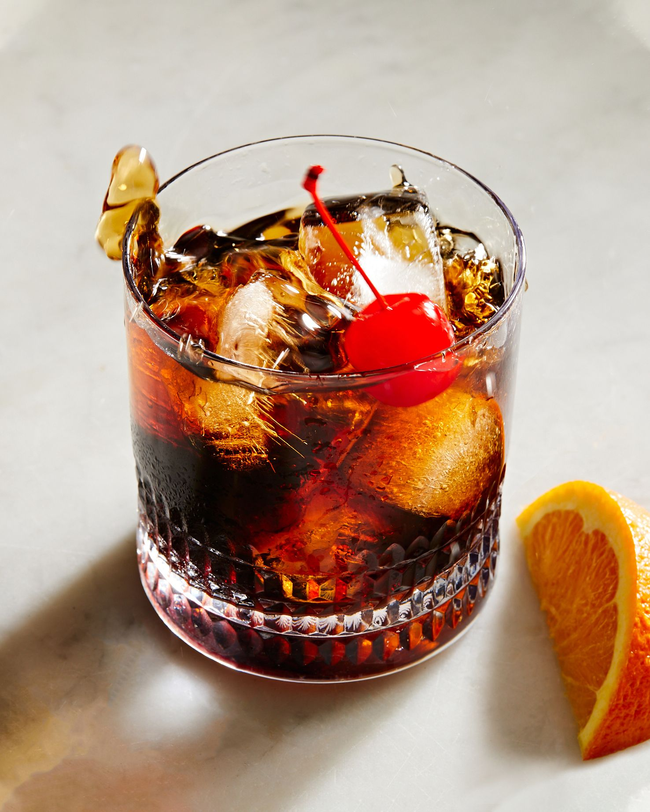
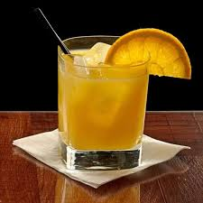
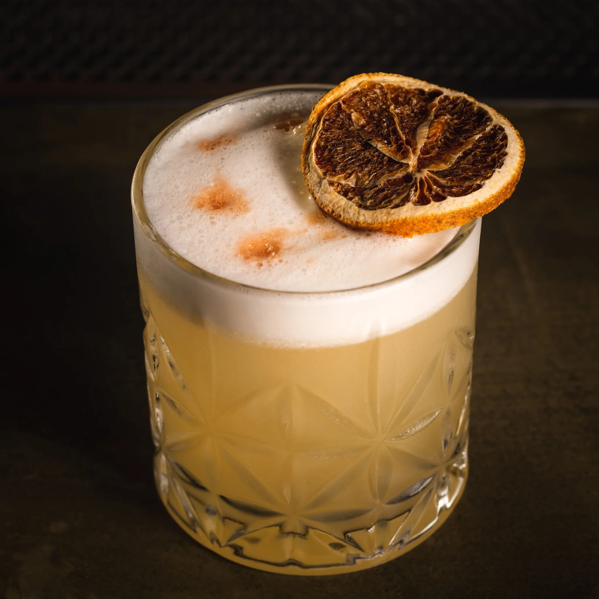
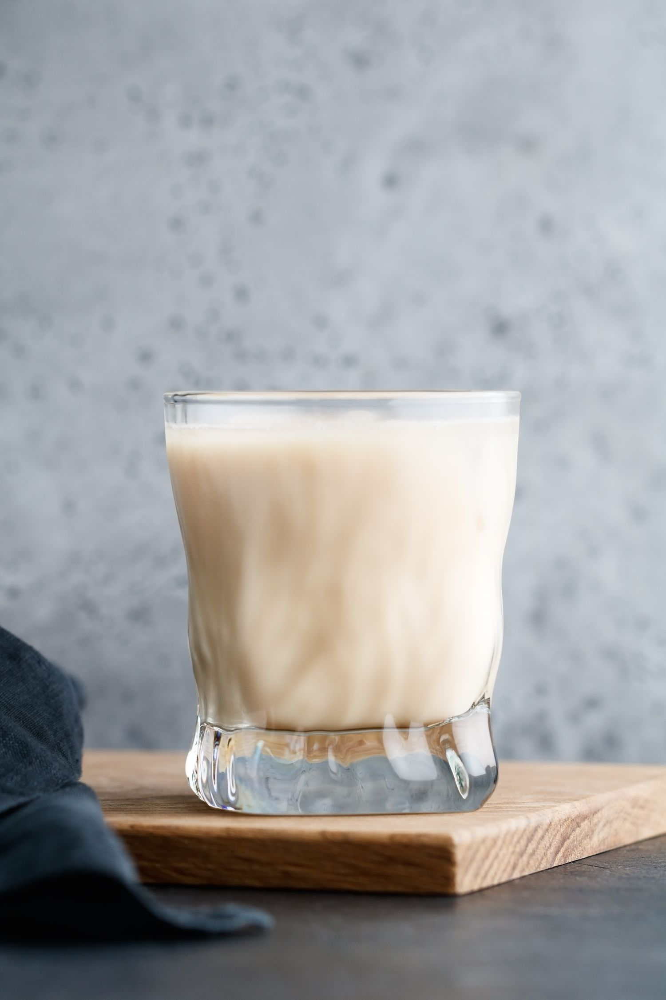
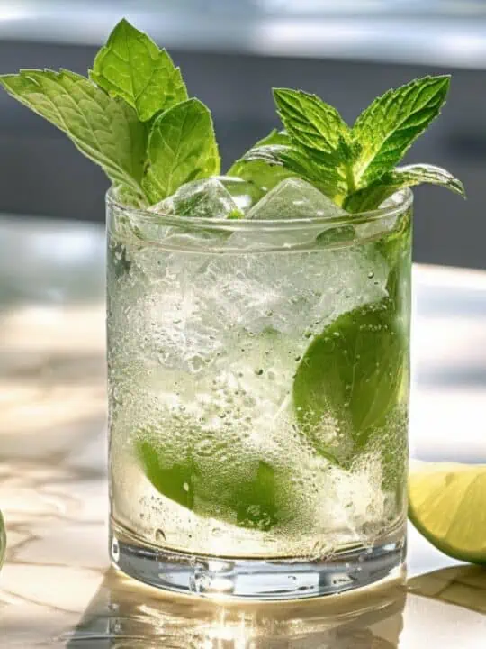
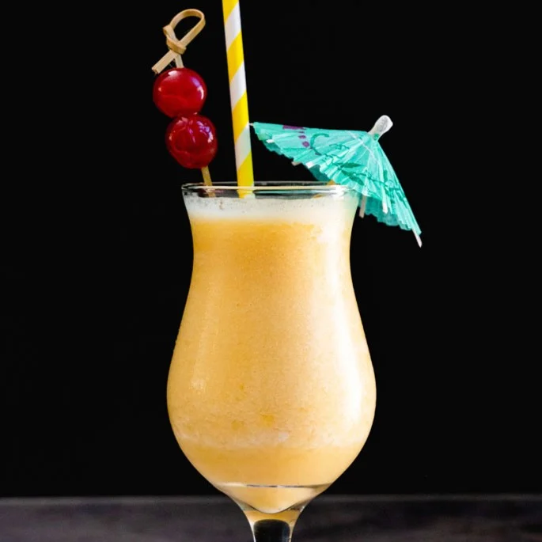

Welcome to Our Bar!
Vodka Drinks
Bay Breeze
Ingredients: Vodka, Cranberry Juice, Pineapple Juice, Lime, Ice
Slightly more complicated than the "cape cod" cocktail, it is also called "Hawaiian breeze".
Black Russian
Ingredients: Vodka, Coffee Liqueur, Ice
The black russian was invented in 1949 by Gustave Tops, a Belgian barman, and now it is an IBA official cocktail. The cocktail owes its name to the use of vodka, a stereotypical Russian spirit, and the blackness of the coffee liqueur.
Screwdriver
Ingredients: Vodka, Orange Juice, Orange, Ice
A simple and popular IBA official cocktail. The drink reportedly got its name because American petroleum engineers in Saudi Arabia secretly added vodka to small cans of orange juice and stirred the mixture with their screwdrivers.
Whiskey Drinks
Whiskey Sour
Ingredients: Whiskey, Lemon, Sugar Syrup, Egg, Ice
An IBA official pre-dinner cocktail. The oldest historical mention of a whiskey sour dates back to a newspaper published in Wisconsin, USA, in 1870. This version is a bit sweeter and stronger than the official cocktail and feels more balanced.
Sneaky Pete
Ingredients: Whiskey, Coffee Liqueur, Milk, Ice
A variation of the classic “White Russian” cocktail made with whiskey instead of vodka, creating a different yet familiar experience for those who enjoy a creamy and smooth cocktail.
White Rum Drinks
Cuba Libre

Ingredients: White Rum, Cola, Lime, Ice
Often referred to as “rum and cola,” this IBA official cocktail became popular in the US after the Andrews sisters recorded a song named after the drink’s ingredients, “Rum and Coca-Cola,” in 1945. A popular variation often omits lime juice.
Mojito
Ingredients: White Rum, Lime, Mint, Sugar, Soda, Ice
One of the most popular rum-based cocktails. This is an IBA official cocktail that was invented in Cuba around the 16th century.
Piña Colada
Ingredients: White Rum, Coconut Cream, Pineapple Juice, Ice
“Piña colada” translates from Spanish as “strained pineapple”. It is an official IBA cocktail and has been the official beverage of Puerto Rico since 1978.
Enjoy our exclusive drinks.